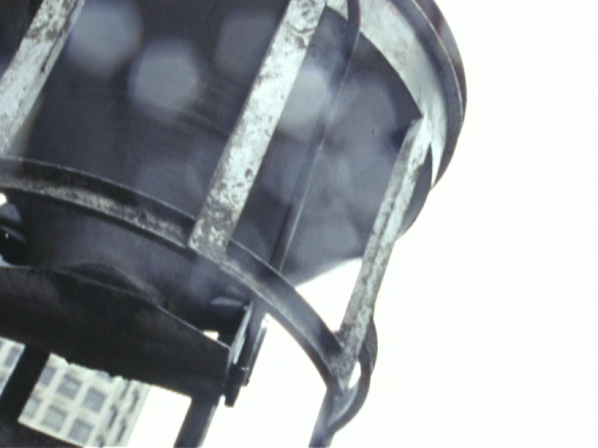

Writing, and other things.
I’m a Vancouver-based writer and media artist.

Writing
Essays & criticism
Academic writing
Magic: The Gathering
A long-running archive of strategy, tournament coverage, and columns, from The Dojo through TCGplayer.
Projects
-
 IJPAUC?
IJPAUC?
Music and media project.
-
 VVIP25
VVIP25
A project from 2025.
-

Films & videoShort films, camcorder footage, and other moving-image work.